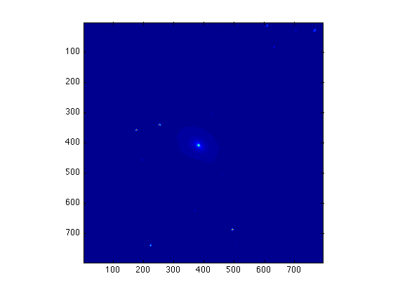
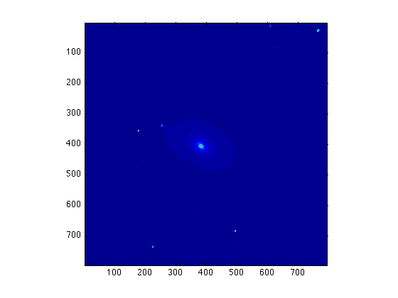

Shifting Images
Contents
Assuming we have two images of the same object:
imagesc(M81B)
axis square
imagesc(M81R)
axis square
|  |
that we are not sure if they are aligned properly or not. In order to make a composite image, these images in different filters must be exactly lined up. Fortunately, there are many bright stars in both images which can be used as referenct points.
Finding the difference in coordinates
You must be careful when choosing the reference points. Here we use two bright stars on the upper-left of the galaxy and then take average over them. (Theoretically, the more points you use, the more accurate your result will be.)
We now type ginput to find the coordinates of the points in both images:
imagesc(M81B)
axis square
[x1, y1] = ginput(2)
x1 = 176.4459 253.3494 y1 = 358.2178 339.5746
imagesc(M81R)
axis square
[x2, y2] = ginput(2)
x2 = 178.7763 253.3494 y2 = 358.2178 344.2354
Assuming we want to keep M81B unchanged and shift M81R to fit M81B. Then we calculate the difference in coordinates:
Diffx = x1 - x2
Diffx =
-2.3304
0
Diffy = y1 - y2
Diffy =
0
-4.6608
Averaging over the two points we have
Dx = mean(Diffx)
Dx = -1.1652
Dy = mean(Diffy)
Dy = -2.3304
Remember that the rows are in the y-direction and the columns are in the x-direction, and the pixel indices should be integer. Therefore the number of rows and columns over which M81R must be shifted, are
Nrow = round(Dy)
Nrow =
-2
Ncol = round(Dx)
Ncol =
-1
The round() function returns value to the nearest integer. Note that, even though the original images M81B and M81R look aligned properly, they are actually not!
(If both Nrow and Ncol are zero, then you don't need to shift either images; they are aligned already.)
Calling the function 'imshift'
Now we use the function imshift to shift M81R with Nrow and Ncol:
imr=imshift(M81R,Nrow,Ncol);
Then we can compare the shifted M81R (i.e. imr) with M81B:
imagesc(M81B)
axis square
imagesc(imr)
axis square
|  |